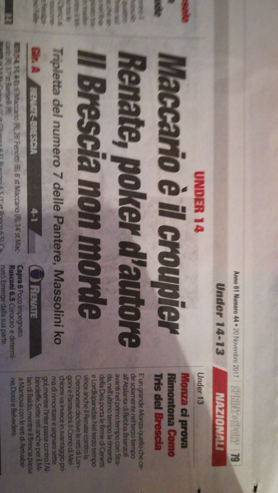

-
On February 18, 2004 I was born in Turin at the "Sant'Anna" hospital at 10.45 pm
-
During these years I went to the nursery called "Tetti Francesi" and I decided to start playing football
-
I started my first years of primary school in Rivalta, where I lived until June 2012 because then later...
-
...I had to move to Como due to my dad's job, so I continued primary school here in Como, where I still live, at the "Francesco Baracca" school. Once I arrived in Como I wanted to try some new sports so, in addition to playing football in the "Cittadella ASD" team, I also started playing tennis at the "Villa Olmo" sports center
-

I think these were the best years I've lived so far: the teenage years. Personally, I appreciated every single day because it was in these years that, while attending the "Giuseppe Parini" middle school, I met many teenagers with whom I have maintained relationships up until today, and with some of them I still go out togheter. Furthermore, in 2015, I decided to leave tennis and continue my football "career". For the first time I was bought by a new team, the "Accademia Calcio Como", 2016, and after one year I was called by "A.C. Renate"
-

These were the years of "Paolo Giovo" High School and Covid. Although I could not experience them fully, I must admit that they were five wonderful and important years because they helped me grow and mature a lot. During these years I met many boys and girls and realized what the word friendship means and how it is enough to have a few but true friends instead of having a thousand but no one to talk to when you need them. Meanwhile, my football career was continuing in the best of ways. Stop... I was forgetting that I bought the motorbike
-
I recently started university at USI in Switzerland and I am attending the Bachelor of Informatics because I have always had a great passion for technology. Furthermore, over the years, curiosity has increased as to how applications, video games, phones and soon on are capable of reacting based on certain inputs, which is why I chose to become a computer scientist. Sorry, I was forgetting to tell you that I also won the Primavera 3 championship and the Italian scudetto, in other words I am Italian Primaver 3 Champion 2022/2023